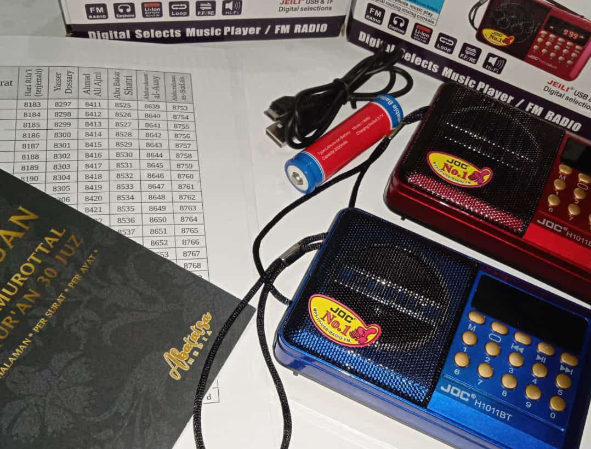

Panduan Speaker Abatatsa Media
"Abatatsa Media" adalah aplikasi panduan untuk mendengarkan Speaker Murottal al-Qur'an yang telah disusun oleh tim Abatatsa Media. Dengan menggunakan aplikasi ini, jelajahi keindahan bacaan kitab suci al-Qur'an dengan lebih mudah dan praktis. Jika ada pertanyaan, kritik atau saran dalam penggunaan aplikasi ini, silahkan hubungi kami di :
- Whatsapp/Telegram : 085258832552